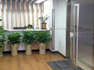

지역별 소개 및 신청


 중국 수출BI 충칭
중국 수출BI 충칭
충칭 수출인큐베이터는 중국 서남부지역에 진출하고자 하는 우리 중소기업의 현지 조기정착과 마케팅 지원을 위해 2016년 12월 개소하였으며, 충칭 시내 번화가인 관음교(观音桥) 협신센터(协信中心) 12층에 위치하고 있습니다.
입지여건
중국의 젊은 직할시, 충칭시의 고속성장
- 직할시 승격 20년, 중국 서부의 경제중심지로 부상중
- 자동차, IT전자산업, 물류인프라, 유통, 한류문화, 지식 컨텐츠 등 경제 각 분야에서 고속 성장 중
- 중국 정부가 1997년 6월 18일 충칭시를 직할시로 승격한 이후 2000년대초 서부대개발정책의 핵심지역으로 성장을 거듭해온 충칭시는최근 중국 정부의 일대일로(一帶一路, 육・해상 실크로드) 정책과 창장경제벨트를 잇는 경제허브로 성장 중이며, 2016년 10.7%의 경제성장률을 기록, 중국 성시 중 1위를 차지.
- 산업별 증가율 : (제조) 자동차 11.7%, 전자 17.7%, 소비재 11.7%, 설비 9.3%, (기타) 건축업 15.1%, 도·소매업 7.9% 등
진출 유망 사업 분야
-
자동차 제조업 및 관련 부품 제조업
- 2015년부로 충칭시의 자동차 생산량은 300만대를 돌파, 중국의 최대의 자동차 생산기지로 자리 잡음
- 우리나라의 현대자동차를 비롯해 GM 우링(五菱) 등 글로벌 자동차메이커가 서부시장을 겨냥한 생산공장을 잇따라 건설함에 따라 2018년 충칭시의 자동차 생산대수는 400만대이상으로 전망
- 특히, 현대차 중국 합작법인인 북경현대는 충칭시에 중국의 5번째 생산공장을 2017년 완공하고 8월말부터 가동하여, 관련 계열사 및 협력업체가 약 100개사에 이르고 건축설계, 엔지니어링, 부대서비스에 종사하는 기업이 베이징, 상하이, 시안, 칭다오 등지에서 새로운 사업거리 발굴을 위해 진출하고 있는 상황
-
늘어나는 도심상권 및 소비재 시장
이전에는 구 도심의 해방비(解放碑) 지역을 중심으로 단일상권이 형성됐으나, 도시화가 진행됨에 따라 도심상권은 관인치아오(观音桥), 따핑(大坪), 난핑(南坪) , 샤핑바(沙坪坝) 등 8개 지역으로 증가하였으며, 이들 상권은 대형 백화점을 비롯한 각종 쇼핑몰이 들어서고 글로벌 브랜드가 속속 입점하여 우리 소비재 기업들의 중국 서부내륙지역의 타켓 시장으로 자리매김함
-
중국 서부의 교통, 물류의 중심
- (공항) 충칭 장베이공항 이용객수는 2015년부로 3,000만명을 넘어섰음. 이용객 수 기준 중국 10대 공항 중 하나로 성장했으며, 2017년 7월 중국 중서부에서 규모가 가장 큰 제3 터미널을 완공하였음
- (항만) 장강수로를 통해 물자 운송을 전담하기 위해 춘탄항과 궈위안항을 운영. 충칭 경제의 발전에 힘입어 컨테이너를 비롯한 각종 물자를 운송
- (철도) 충칭에서 출발해 유럽에 도달하는 국제 철도운송 루트(위신오우(渝新欧))를 개통(2014년 3월). 중국 충칭에서 출발해 카자흐스탄, 러시아, 벨라루스, 폴란드, 독일 6개 나라를 통과하며 총 운행거리는 1만1,179㎞로 독일까지 16일, 폴란드 14일, 러시아 11일, 카자흐스탄 6일이 소요
입주면적/주요시설
- 총면적 527.09㎡
- 입주기업사무실(독립형) 약 7.5㎡~14㎡， 10개실
- 회의실 소회의실(4명) 1개실, 대회의실(20명) 1개실
- 중소기업 수출사랑방(데스크형) 2실
- 기타 공용실 한국 우수상품 전시공간. 복사기, 탕비실, 공동창고, 행정실 등
입주부담금
-
수출인큐베이터
- 입주보증금 : 500만원
- 월 임차료(1년차 기준) :10만원 내외
- 실비부담 : 전기, 인터넷, 냉난방, 청소 등 관리비는 입주공간 면적비율에 따라 적용하여 공동 부담 (월 8~9만원(500위안) 수준) - 공유오피스 : 무료
찾아오시는 길
-
택시 이용시
충칭 북쪽에 소재한 장베이 국제공항에서 BI 사무실까지 약 60위안, 약 40분 소요
공항에서 시내 들어오는 길이 다소 막힘에 따라 가급적 공항버스(1路, 10위안)나 지하철(3호선, 관음교역-观音桥站)을 타시고 지하철역에서 도보로 이동하시는 게 낫습니다. -
지하철(전철) 이용 시
지하철(3호선) 장베이 국제공항역 승차, 관음교역(观音桥站)에서 하차 후 도보로 약 10분 이동
-
공항버스 이용시
- 매 30분마다 배차(1路, 10위안)
- (시내방향) 机场 ⇒ 加州花园 ⇒ 大庙(观音桥)(BI사무실 큰 길가 건너편) ⇒ 上清寺
- (공항방향) 上清寺 ⇒ 民航大厦(红旗河沟 지하철역 北侧)⇒ 机场
-
차량 이용시
네비게이션에 “协信中心” 또는 “重庆江北希尔顿逸林酒店” 찍고 출발
⇒ 주차는 “星光68广场” 쇼핑몰 지하 2층, 3층을 사용
⇒ 시내 중심가라 도로 사정 및 주차 여건이 불편하여 가급적 대중교통을 이용
시설사진
- 건물전경
인큐베이터내부구성

인큐베이터 입구- 상품전시 및 휴게실
- 입주기업사무실
- 대회의실(20명)
- 소회의실
- 탕비실
위치
 주소|
重庆市 江北区 洋河一路68号 协信中心 C座 12楼3号 (400020)
주소|
重庆市 江北区 洋河一路68号 协信中心 C座 12楼3号 (400020)
담당자
- 서영목 소장
- 전화: +86-23-6705-2399
- 팩스: +86-23-6039-1009
- 이메일: ymseo@kosmes.or.kr